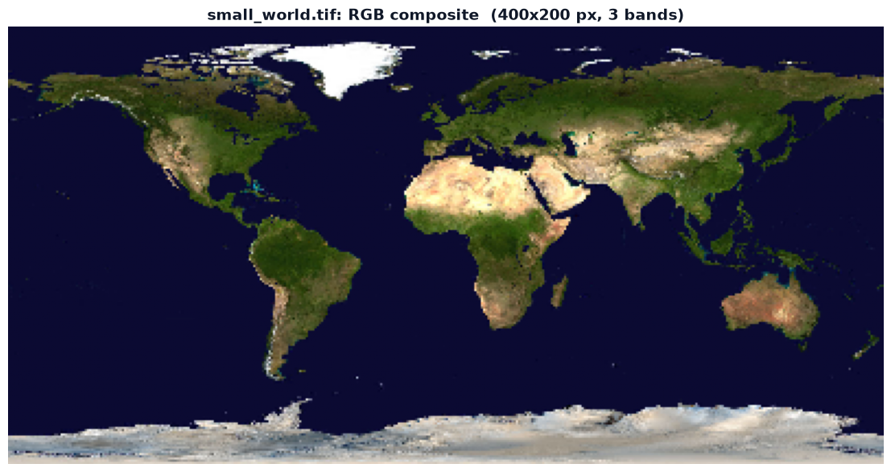

Raster data is one of the two fundamental spatial data models in Geographic Information Science (GIS). It represents the world as a regular grid of cells (pixels), where each cell covers a fixed area on the ground and stores one or more numeric values. Raster data is the natural format for continuously varying phenomena such as elevation, temperature, precipitation, satellite reflectance, land-cover classification, and modelled risk surfaces, because it captures both spatial extent and value simultaneously across the entire study area.
This folder is Module 02. Four notebooks take a grid of cells from a definition to a finished raster, using geolattice.raster.
Raster Data. This notebook. What a cell, a band, and a geotransform are, and how the module is organised.
Reading and Writing Raster Data. Opens GeoTIFF, PNG, JPEG, ASCII grid, IMG, ENVI, and other GDAL formats, and writes them back.
Coordinate Reference Systems (CRS). Checks a raster CRS and reprojects DEMs for Bangladesh and the USA.
Raster Operations. Clips, reclassifies, runs focal statistics and raster algebra, and mosaics, stacks, and summarises cells inside zones.
Raster data divides a geographic area into a regular grid of equal-sized rectangular cells. Every cell (also called a pixel) stores one numeric value per band. The position of a cell in space is defined by:
The origin of the grid (the top-left or bottom-left corner coordinate).
The cell size (spatial resolution): how many metres, degrees, or other units each cell represents on the ground.
The number of rows and columns: the grid dimensions.
A Coordinate Reference System (CRS): the coordinate frame that anchors the grid to the Earth.
Together these four properties define the geotransform that maps any cell’s row/column index to real-world coordinates.
Raster vs. Vector
Aspect
Raster
Vector
Representation
Regular grid of cells
Discrete objects (points, lines, polygons)
Best for
Continuous phenomena (elevation, temperature)
Features with crisp boundaries (roads, parcels)
Storage
Array of values; size grows with extent times resolution
Coordinate lists + attribute table; size grows with feature count
Precision
Resolution-limited
Exact boundary coordinates
Analysis
Map algebra, surface analysis, image processing
Overlay, network, proximity, geoprocessing
Editing
Modify cell values
Add, move, delete individual features
Bands
A raster can contain multiple bands: layers within the same grid extent and resolution, each storing a different variable or spectral channel. Common examples:
Dataset
Bands
Grayscale DEM
1 (elevation)
RGB image
3 (Red, Green, Blue)
Landsat 8
11 (spectral bands from Coastal Aerosol to Thermal)
Sentinel-2
12 (spectral bands, 10-60 m resolution)
MODIS daily land surface temp
2 (Day LST + Night LST)
ERA5 NetCDF
Many (temperature, precipitation, wind, and related fields across time steps)
Cell Data Types
Raster cells store values using standard numeric data types inherited from GDAL and NumPy:
GDAL type
NumPy dtype
Range
Typical use
Byte
uint8
0-255
Classified land cover, RGB imagery
UInt16
uint16
0-65 535
Satellite reflectance (scaled), population counts
Int16
int16
-32 768 to 32 767
Signed elevation (metres), temperature (scaled)
Int32
int32
about +/- 2.1e9
Large integer IDs
Float32
float32
about +/- 3.4e38
Most derived analysis products (slope, NDVI, precipitation)
Float64
float64
about +/- 1.8e308
High-precision scientific data
NoData
Raster files carry a NoData sentinel value: a special number (for example, -9999 or 255) that marks cells where data is absent (outside the study area, cloud-masked, or sensor fill). Functions in GeoLattice always mask NoData values before analysis and propagate the mask through operations.
Why Raster Data Matters
Raster data is the backbone of Earth observation and environmental modelling:
Elevation Modelling: Digital Elevation Models (DEMs) are the foundational raster dataset for terrain analysis, hydrology, visibility, and engineering design. Global products include SRTM (90 m), NASADEM (30 m), CopDEM (30 m), and USGS 3DEP (1 m).
Remote Sensing and Satellite Imagery: Multispectral and hyperspectral images from Landsat, Sentinel, MODIS, and commercial satellites are rasters. They underpin land-cover mapping, vegetation indices (NDVI, EVI), water quality monitoring, and change detection.
Climate and Weather Data: Gridded products such as ERA5 reanalysis, CHIRPS rainfall, and CMIP6 projections are rasters with time, latitude, and longitude dimensions: the foundation of climate science and agriculture modelling.
Environmental Risk Mapping: Flood inundation models, wildfire risk surfaces, earthquake ground-shaking maps, and air-quality rasters are used directly in disaster management and insurance.
Urban Remote Sensing: High-resolution LiDAR point clouds (COPC rasters), building height models, and land surface temperature products feed urban heat island, solar potential, and noise modelling studies.
Precision Agriculture: Crop stress indices, yield maps, and soil moisture rasters are central to variable-rate fertilisation and irrigation management.
Public Health and Epidemiology: Population density grids (WorldPop, LandScan), malaria risk surfaces, and air-pollution rasters are used to model exposure and access to services.
Python, through GDAL, Rasterio, NumPy, xarray, and Matplotlib / Cartopy, is the dominant open-source stack for raster data processing. GeoLattice wraps these libraries behind a consistent, learner-friendly API organised around the workflows covered in this module.
Core Concepts
Before diving into the notebooks, the following concepts are essential.
Spatial Resolution
Spatial resolution is the ground dimension of a single cell. A 30 m DEM means each pixel represents a 30 m by 30 m patch of ground. Choosing the right resolution involves a trade-off:
Resolution
File size
Level of detail
Typical products
< 1 m
Very large
Building-level features
LiDAR derivatives, drone imagery
10-30 m
Large
Field / block scale
Sentinel-2, Landsat, NASADEM, SRTM
90-250 m
Moderate
Catchment / district scale
SRTM 90 m, MODIS land products
0.25 deg to 1 deg
Small
Regional / continental scale
ERA5 climate, global precipitation
Rule: Always match raster resolution to your analysis scale. Resampling to a finer resolution does not add real information (it only interpolates).
Extent and Geotransform
The spatial extent (bounding box) of a raster is defined by: - xmin, xmax: left and right edges - ymin, ymax: bottom and top edges
The GDAL geotransform is a 6-element tuple (x_origin, x_pixel_size, x_rotation, y_origin, y_rotation, y_pixel_size) that fully encodes the spatial registration. For north-up rasters the rotation terms are 0 and y_pixel_size is negative.
Coordinate Reference Systems (CRS) for Rasters
Like vector data, every raster must carry a CRS. GDAL stores it internally as Well-Known Text (WKT2). Key rules:
Use a geographic CRS (lon/lat) for global datasets and data exchange.
Use a projected CRS (metres) for distance, area, slope, and any analysis where cell size must be constant.
Changing a raster’s CRS requires reprojection: resampling the pixel grid into the new coordinate space. This is computationally intensive and slightly lossy; do it once, early in the workflow.
Resampling Methods
When a raster is reprojected or resized, cell values must be redistributed into the new grid. The resampling algorithm determines how:
Method
When to use
Nearest Neighbour
Categorical / classified data (preserves original class values)
Bilinear
Continuous numeric data (smooth interpolation between 4 neighbours)
Cubic / Cubic Spline
Smooth continuous data; reduces aliasing at cost of speed
Average
Aggregating to a coarser resolution (mean of contributing cells)
Mode
Categorical downsampling (most frequent class in contributing cells)
Lanczos
High-quality downsampling of imagery
Common Raster File Formats
Format
Extension
Notes
GeoTIFF
.tif, .tiff
The universal standard; supports multiple bands, CRS, NoData, compression
Cloud-Optimised GeoTIFF
.tif
GeoTIFF with internal tiling and overviews for HTTP range requests
NetCDF
.nc
Self-describing array format; used for climate, oceanographic, and time-series data
HDF5
.h5, .hdf5
Hierarchical format; used for MODIS, VIIRS, and other NASA products
Zarr
.zarr
Cloud-native chunked array store; used with xarray for large data cubes
ESRI ASCII Grid
.asc
Plain-text grid; portable but large and slow
Erdas Imagine
.img
Esri legacy format; still common in older datasets
ENVI
.img + .hdr
Common in hyperspectral remote sensing
USGS DEM
.dem
Legacy USGS elevation format
PNG / JPEG
.png, .jpg
Image formats; PNG is lossless, JPEG is lossy; georeference with world files (.pgw, .jgw)
The GDAL/Rasterio Stack
All GeoLattice raster I/O is backed by GDAL: the Geospatial Data Abstraction Library, which supports over 160 raster formats:
Rasterio provides a Pythonic wrapper around GDAL for file I/O and coordinate transforms. NumPy handles the pixel arrays. xarray adds labelled dimensions and time-series support on top of NumPy arrays.
GeoLattice Raster Data Architecture
The geolattice.raster sub-package is organised into functional areas that map directly to the sub-notebooks of this module:
API module:geolattice.raster.raster_read_write (also exported from geolattice.raster)
The first practical skill in any raster workflow is reading data from disk and writing processed results back out. This notebook walks through opening every common raster format using GeoLattice, inspecting dataset metadata (CRS, extent, resolution, bands, data type, NoData), visualising single-band and multi-band rasters, and writing new files.
What you will learn
Topic
Key Functions
Description
List supported formats
supported_formats, supported_write_formats
Print every format GDAL can open or create
Open raster files
open_raster_data
Open GeoTIFF, PNG, JPEG, ASC, IMG, ENVI, USGS DEM, GIF, and more
Read pixel arrays
read_raster_data
Load one or more bands into a NumPy array
Inspect metadata
dataset attributes
Print CRS, geotransform, extent, resolution, band count, data type, NoData
Visualise rasters
plot_raster, plot_rasters
Single-band grayscale and false-colour composite maps
Reprojecting a raster moves its pixel centres from one coordinate reference system to another and resamples the values into the new grid. This notebook explains why raster CRS management matters, how to inspect and validate the CRS of any raster file, and how to reproject single rasters and entire batch folders using GeoLattice.
What you will learn
Topic
Key Functions
Description
Read a raster CRS
get_raster_crs
Return the CRS as a pyproj CRS object with EPSG, WKT, and PROJ string
Validate the CRS
validate_raster_crs
Check whether the CRS is defined and internally consistent
Build a target CRS
define_crs
Construct a CRS from an EPSG code, PROJ string, or WKT
Reproject a raster
reproject_raster
Warp a raster file to a new CRS with a chosen resampling algorithm
Fine-grained warping
warp, warp_options
Access the full GDAL Warp API with output resolution, extent, and cutline control
Batch reprojection
loop over reproject_raster
Reproject an entire folder of rasters in a single loop
API module:geolattice.raster.basic_raster_operation
This is the core raster processing notebook. It covers the full suite of raster manipulation tools: from simple clip and reclassify, through focal statistics and raster algebra, to mosaicking, stacking, and zonal statistics. All functions are high-level helpers that wrap GDAL Translate, Warp, and DEMProcessing calls.
What you will learn
Category
Key Functions
Description
Metadata and inspection
summarize_raster
Print band statistics (min, max, mean, std, NoData count)
Clip
clip
Clip a raster to a bounding box or polygon mask
Reclassify
reclassify
Reassign cell values according to a breakpoint table
# NDVI from Landsat bands 4 (NIR) and 3 (Red)raster_algebra(nir, red, expression="(A - B) / (A + B)", output=ndvi_path)# Difference between two elevation modelsraster_algebra(dem_2020, dem_2000, expression="A - B", output=change_path)# Conditional: mask values below sea levelraster_algebra(dem, expression="np.where(A > 0, A, nodata)", output=masked_path)
Quick-Start: Importing GeoLattice Raster
The cell below shows the canonical import pattern used across all Module 02 notebooks. Run it to verify your environment is configured correctly.
Installation. This notebook needs installation option 1 (vector, raster, CRS and visualization): pip install "geolattice[core]". See “Installation options” in the GeoLattice README.
Code
# Display matplotlib figures inline in this Jupyter notebook.%matplotlib inline# Standard library imports for path setup.import sys # mutate sys.path so geolattice can be imported from the repo rootimport os # current working directory for root discoveryfrom pathlib import Path # filesystem paths for locating sample data# ===================================================================# Core numeric / array libraries used throughout Module 02.# ===================================================================import numpy as np # pixel arrays and numeric opsimport pandas as pd # tabular helpers when neededimport matplotlib.pyplot as plt # figure and axes creation for maps# Print installed versions for environment checks.print(f" numpy {np.__version__}")print(f" pandas {pd.__version__}")# ===================================================================# GDAL / Rasterio: low-level raster I/O and format support.# ===================================================================from osgeo import gdal # GDAL dataset API and data-type namesimport rasterio # Pythonic raster I/O wrapper around GDAL# Print GDAL and Rasterio versions.print(f" gdal {gdal.__version__}")print(f" rasterio {rasterio.__version__}")# ===================================================================# GeoLattice raster sub-modules used across the Module 02 notebooks.# ===================================================================from geolattice.raster import ( open_raster_data, # open a raster dataset from a path read_raster_data, # load band data into a NumPy array supported_formats, # list formats GDAL can open supported_write_formats, # list formats GDAL can create write_raster_data, # write an array to a georeferenced file write_geotiff, # convenience writer for GeoTIFF write_jpeg, # convenience writer for JPEG write_png, # convenience writer for PNG)# CRS helpers for inspecting and reprojecting rasters.from geolattice.raster import raster_CRS as rcrs # Module CRS and warp tools# High-level clip, algebra, mosaic, and zonal helpers.from geolattice.raster import basic_raster_operation as bro # Module raster operations# ===================================================================# GeoLattice visualisation helpers and shared map style.# ===================================================================from geolattice.viz import apply_map_style, plot_raster, plot_rasters # map helpers# Apply the shared GeoLattice map style (fonts, colors, spines).apply_map_style()# Walk up from the working directory until Data/00_shared/raster_data is found.ROOT = Path.cwd().resolve()whilenot (ROOT /"Data"/"00_shared"/"raster_data").is_dir():if ROOT.parent == ROOT:raiseFileNotFoundError("Could not find Data/00_shared/raster_data from the working directory.") ROOT = ROOT.parent# Confirm that the raster stack imported cleanly.print("\nAll GeoLattice raster modules loaded successfully!")
All Module 02 notebooks read from the same data layout under the repository root:
<REPO>/
├── data/
│ └── raster_data/
│ ├── gdal_samples/ # GDAL autotest sample rasters (GeoTIFF, PNG, JPEG, ASC, IMG, ...)
│ ├── Bangladesh/
│ │ ├── raj_DEM_GCS.tif # Bangladesh DEM in geographic CRS (WGS 84)
│ │ ├── hilly_dem_BTM.tiff # Bangladesh hilly-district DEM in BTM (250 m)
│ │ └── BD_DEM/GCS/ # Tile set for batch reprojection
│ ├── USA/
│ │ ├── Onondaga_DEM.tif # Onondaga County DEM (SRTM 90 m)
│ │ ├── DEM_TILES/ # Tile set for batch reprojection and mosaic
│ │ └── CO_ELEV.tif # Colorado elevation raster
│ └── output_folder/ # All computed outputs are written here
│ ├── bangladesh/
│ └── usa/
└── geolattice/
└── raster/ # GeoLattice source code for this module
Code
# ===================================================================# Verify that the expected Module 02 raster data folders exist.# ===================================================================# Resolve the current working directory as a starting point for the root search.ROOT = Path.cwd().resolve()whilenot (ROOT /"Data"/"00_shared"/"raster_data").is_dir():if ROOT.parent == ROOT:raiseFileNotFoundError("Could not find Data/00_shared/vector_data from the working directory.") ROOT = ROOT.parentsys.path.insert(0, str(ROOT))# Map friendly labels to absolute paths under the repo data tree.data_dirs = {"GDAL samples": ROOT /"Data"/"00_shared"/"raster_data"/"gdal_samples","Bangladesh DEMs": ROOT /"Data"/"00_shared"/"raster_data"/"Bangladesh","USA DEMs": ROOT /"Data"/"00_shared"/"raster_data"/"USA","Output folder": ROOT /"Data"/"00_shared"/"raster_data"/"output_folder",}# Print a short status table for each required directory.print("Data directory status:")print("-"*65)# Walk each labelled path and report whether it exists on disk.for label, path in data_dirs.items():# Choose a found / missing marker for the current path. status ="found"if path.exists() else"NOT FOUND"# Print a fixed-width label, status, and absolute path.print(f" {label:<28}{status:<10} ({path})")
Data directory status:
-----------------------------------------------------------------
GDAL samples found (/home/zia207/Github/GeoLattice/Data/00_shared/raster_data/gdal_samples)
Bangladesh DEMs found (/home/zia207/Github/GeoLattice/Data/00_shared/raster_data/Bangladesh)
USA DEMs found (/home/zia207/Github/GeoLattice/Data/00_shared/raster_data/USA)
Output folder found (/home/zia207/Github/GeoLattice/Data/00_shared/raster_data/output_folder)
A first look: opening and plotting a GeoTIFF
The cells below open the small_world.tif GeoTIFF sample, print its metadata, and display the raster: a minimal end-to-end example of the GeoLattice raster workflow you will build on throughout this module.
Code
# ===================================================================# Open a sample GeoTIFF and print key raster metadata.# ===================================================================# Build the absolute path to the GDAL sample world raster.sample_path = ROOT /"Data"/"00_shared"/"raster_data"/"gdal_samples"/"small_world.tif"# Open the GeoTIFF with the GeoLattice raster reader.ds = open_raster_data(str(sample_path))# Read the six-element geotransform for origin and pixel size.gt = ds.geotransformband = ds.get_band(1)# Print a compact metadata summary for the opened dataset.print("Raster Metadata")print(f" File : {sample_path.name}")print(f" Size : {ds.width} cols x {ds.height} rows")print(f" Bands : {ds.band_count}")print(f" Data type : {band.dtype}")print(f" NoData : {band.nodata}")print(f" Pixel size : {gt[1]:.6f} deg x {abs(gt[5]):.6f} deg")print(f" Origin (UL) : ({gt[0]:.4f}, {gt[3]:.4f})")print(f" CRS : {ds.crs}")
Raster Metadata
File : small_world.tif
Size : 400 cols x 200 rows
Bands : 3
Data type : uint8
NoData : None
Pixel size : 0.900000 deg x 0.900000 deg
Origin (UL) : (-180.0000, 90.0000)
CRS : EPSG:4326
Code
# ===================================================================# Read the pixel array and plot a single-band or RGB preview.# ===================================================================# Read all bands into a NumPy array (bands, rows, cols when multi-band).arr = ds.read()# Branch on band count: grayscale for one band, RGB for multi-band.if ds.band_count ==1:# Create a wide figure for a single-band grayscale map. fig, ax = plt.subplots(figsize=(12, 6))# Draw the array with a terrain colormap and northern-upper origin. im = ax.imshow(arr, cmap="terrain", origin="upper")# Add a colorbar that reports the cell value units. plt.colorbar(im, ax=ax, label="Value", shrink=0.7)# Title the map with the file name and pixel dimensions. ax.set_title(f"{sample_path.name}: {ds.width}x{ds.height} px", fontsize=14, fontweight="bold", )else:# Keep the first three bands and move them to channels-last for RGB. rgb = np.moveaxis(arr[:3], 0, -1) # shape becomes (rows, cols, 3)# Stretch RGB values into the 0-1 range expected by imshow. rgb = (rgb - rgb.min()) / (rgb.max() - rgb.min())# Create a wide figure for the RGB composite. fig, ax = plt.subplots(figsize=(12, 6))# Display the normalized RGB composite. ax.imshow(rgb, origin="upper")# Title the map with file name, size, and band count. ax.set_title(f"{sample_path.name}: RGB composite "f"({ds.width}x{ds.height} px, {ds.band_count} bands)", fontsize=14, fontweight="bold", )# Hide axis ticks so the map fills the axes.ax.axis("off")# Tighten whitespace around the figure.plt.tight_layout()# Render the figure in the notebook.plt.show()# Close the GDAL dataset handle.ds =None

Key raster metadata at a glance
The table below summarises the metadata fields you will encounter and inspect throughout this module:
Metadata field
GDAL / GeoLattice attribute
Description
Driver / format
ds.driver
Format name (for example, GTiff, HFA, ENVI)
Width x Height
ds.width, ds.height
Grid dimensions in pixels
Band count
ds.band_count
Number of bands
Data type
ds.get_band(1).dtype
NumPy dtype name (for example, uint8, float32)
NoData value
ds.get_band(1).nodata
Sentinel value for missing data
Geotransform
ds.geotransform
6-tuple: origin, pixel size, rotation
Projection (WKT)
ds.projection_wkt
Full CRS as Well-Known Text
Spatial extent
ds.bounds
(xmin, ymin, xmax, ymax)
Band statistics
ds.get_band(1).statistics
(min, max, mean, std)
Suggested Learning Path
The sub-notebooks are designed to be self-contained but build on each other naturally.
Path A: Sequential (Recommended for beginners)
Work through every notebook in order. Each notebook introduces one layer of the raster processing stack.
Read / Write -> CRS and Projections -> Raster Operations
Path B: Task-Oriented (For practitioners with raster experience)
Jump directly to the notebook that matches your immediate need:
Module 02 of GeoLattice provides a complete, practitioner-oriented introduction to raster data structured around three core workflows:
#
Sub-notebook
Core Library
What you can do after
02.01
Read / Write
GDAL, Rasterio
Open any raster format; inspect metadata; export to GeoTIFF, PNG, JPEG
02.02
CRS and Projections
GDAL Warp, PyProj
Inspect, validate, and reproject rasters to any CRS; batch-reproject tile sets
02.04
Raster Operations
GDAL, NumPy
Clip, reclassify, mosaic, stack, run raster algebra, and compute zonal statistics
All sub-modules share a consistent design philosophy: GDAL-backed I/O, NumPy arrays, CRS-aware, and NoData-safe. Together they build the raster processing skills needed for Module 03 (Spatial Analysis), which uses DEMs, satellite imagery, and climate grids as inputs to terrain analysis, hydrology modelling, and multi-criteria suitability modelling.